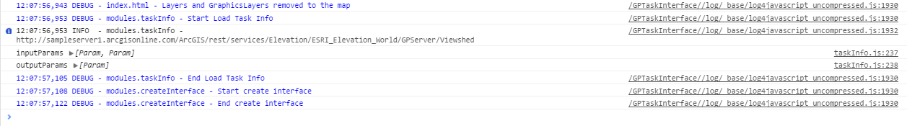

Log messages
You can choose six log levels for this application:
-
ERROR : Shows the unmanaged errors occurred on the app execution
-
WARN : Shows the warning messages about the parameters definition and the task execution.
-
INFO : Shows the data managed by the application (e.g. task information, request's input parameters and received output parameters).
-
DEBUG : Traces the execution steps of the application and shows the currently configuration settings.
-
ALL : Shows all the log messages.
-
OFF : Hides all the log messages.
Each level shows its messages and those of greater levels.
For example, if you sets the INFO level, the application shows the INFO messages and also the WARN and ERROR messages .
